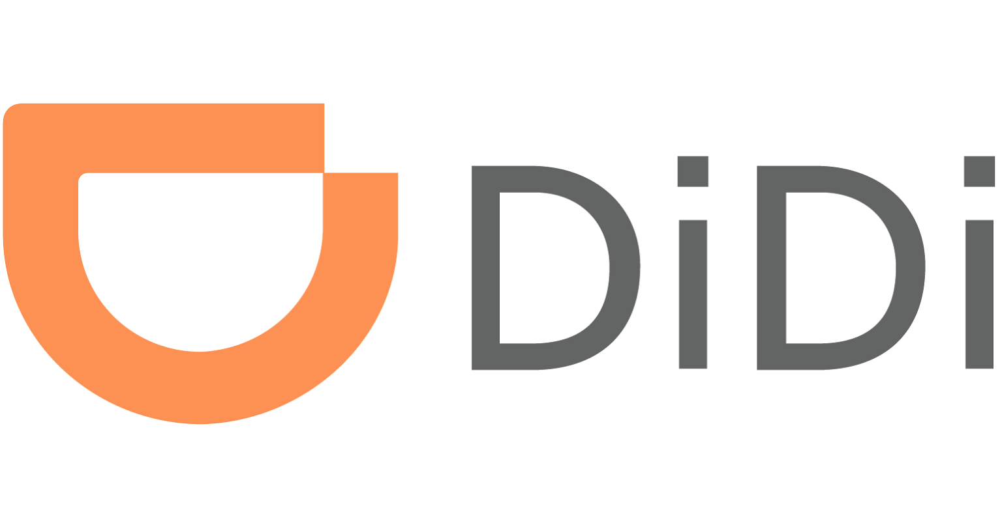
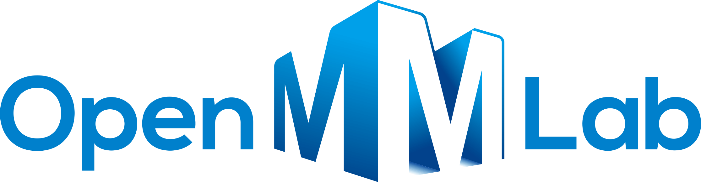

News
- 2024/07 -- One paper got accepted by ECCV 2024.
- 2024/07 -- One paper got accepted by CVPR 2024.
- 2024/07 -- This homepage is established!!!
Publications
* Eauql contribution. # Corresponding author. Representative papers are highlighted.


CrossKD: Cross-Head Knowledge Distillation for Object Detection
Jiabao Wang*, Yuming Chen*, Zhaohui Zheng, Xiang Li, Ming-Ming Cheng, Qibin Hou#.
CVPR, 2024

paper / code / bibtex
Jiabao Wang*, Yuming Chen*, Zhaohui Zheng, Xiang Li, Ming-Ming Cheng, Qibin Hou#.
CVPR, 2024
paper / code / bibtex


Oriented R-CNN for Object Detection
Xingxing Xie, Gong Cheng#, Jiabao Wang, Xiwen Yao, Junwei Han.
ICCV, 2021

paper / code / bibtex
Xingxing Xie, Gong Cheng#, Jiabao Wang, Xiwen Yao, Junwei Han.
ICCV, 2021
paper / code / bibtex
Experience
|
 2023/04 - Present Beijing, China |
Research Scientist InternWorked with Qiang Meng, where we worked on 3D perception. |
|
 2022/01 - 2022/09 Shanghai, China |
Research Engineer InternWorked with Wenwei Zhang, where I was mainly responsible for maintaining MMDetection and MMRotate. |
Education
2022/09 - Present, I am a Ph.D student at College of Computer Science, Nankai University, under the supervision of Prof. Ming-Ming Cheng and Qibin Hou.
2019/09 - 2022/03, I am a graduate student at School of Automation, Northwestern Polytechnical University, under the supervision of Prof. Junwei Han and Gong Cheng.
2015/09 - 2019/07, I was an undergraduate student at Honors College , Northwestern Polytechnical University.
2019/09 - 2022/03, I am a graduate student at School of Automation, Northwestern Polytechnical University, under the supervision of Prof. Junwei Han and Gong Cheng.
2015/09 - 2019/07, I was an undergraduate student at Honors College , Northwestern Polytechnical University.